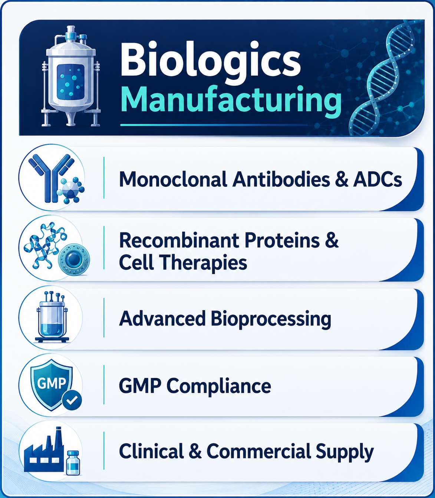

Biologics in Pharmaceutical Innovation: Manufacturing, Applications, and Global Outlook
14 August 2026

Biologics have emerged as one of the most significant advancements in modern medicine. Unlike traditional small molecules, biologics are complex therapeutic products derived from living organisms.
Biologics include monoclonal antibodies, recombinant proteins, vaccines, gene therapies, and cell-based treatments. Their complexity, therapeutic potential, and manufacturing challenges make biologics manufacturing central to the future of healthcare innovation. The growing demand for these therapies has also increased the importance of specialized biologics manufacturers and biologics contract manufacturers.
Biologics
Biologics are medicines produced using biotechnology and living systems. They are typically large, complex molecules that cannot be synthesized through conventional chemical methods. Instead, biologics are manufactured through advanced bioprocessing techniques involving cell cultures, fermentation, and purification.
Their structural complexity allows biologics to target diseases with precision, offering therapies for conditions previously considered untreatable. These processes form the foundation of large molecule manufacturing, while specialized biologics drug substance manufacturers support the production of active biological materials.
Types of Biologics
- Monoclonal antibodies: These are engineered proteins designed to bind specific antigens. Monoclonal antibodies are widely used in oncology, autoimmune disorders, and infectious diseases.
- Recombinant proteins: These proteins produced through genetic engineering, including insulin, erythropoietin, and growth hormones.
- Vaccines: Vaccines are preventive biologics that stimulate immune responses against infectious diseases.
- Gene therapies: It includes the treatments that modify or replace defective genes to address genetic disorders.
- Cell therapies: Cell therapies includes living-cell-based treatments, including CAR-T therapies for cancer and regenerative medicine applications.
Biologics Manufacturing
The manufacturing of biologics is significantly more complex than conventional API manufacturing. Biologics manufacturing involves multiple stages, including cell line development and optimization, upstream processing through fermentation or cell culture, downstream purification using chromatography and filtration, formulation and stability testing, and packaging and cold-chain logistics. Each stage requires strict adherence to Good Manufacturing Practices (GMP) and advanced quality-control systems.
These specialized processes are carried out by experienced biologics manufacturers, while biologic drug substance manufacturing requires specialized facilities and technologies designed for complex biological products. The growing demand for these capabilities has also contributed to the expansion of large molecule contract manufacturing.
Quality and Regulatory Framework
Biologics demand rigorous quality assurance due to their sensitivity and complexity. Regulatory agencies such as the FDA, EMA, and CDSCO require extensive documentation, validation, and clinical data before approval.
Key considerations include batch-to-batch consistency, immunogenicity risk assessment, stability and shelf-life testing, GMP compliance and facility audits, and comprehensive regulatory submissions.
The regulatory pathway for biologics is more stringent than for conventional API manufacturing, reflecting their complexity and patient impact. A specialized biologics substance manufacturer must therefore maintain robust quality systems and comply with stringent regulatory requirements throughout the manufacturing process.
Therapeutic Applications of Biologics
Biologics are revolutionizing treatment across multiple therapeutic areas. In oncology, monoclonal antibodies, and CAR-T therapies are redefining cancer treatment. In immunology, biologics for rheumatoid arthritis, psoriasis, and Crohn’s disease provide targeted treatment.
In rare diseases, gene therapies offer hope for patients with inherited genetic disorders. Vaccines and other biologic therapies strengthen global health defenses against infectious diseases. In endocrinology, recombinant insulin and growth factors remain essential for chronic disease management.
The expansion of these applications is driving demand for specialized large molecule manufacturers and increasing the need for advanced biologics manufacturing capabilities.
Biologics Vs Small Molecule Manufacturing
While conventional API manufacturing relies primarily on chemical synthesis, biologics depend on living systems. This distinction impacts scalability, cost, quality requirements, and regulatory pathways. Many pharmaceutical companies now integrate both biologics and conventional API manufacturing to diversify portfolios and meet global healthcare demands.
As biologic pipelines continue to expand, biologics API manufacturing is becoming an increasingly important part of pharmaceutical manufacturing strategies. The specialized nature of these processes also creates opportunities for large molecule manufacturing and contract manufacturing providers.
Role of Contract Manufacturing in Biologics
Contract manufacturing organizations (CMOs) specializing in biologics provide critical support for pharmaceutical companies. Biologic CMOs offer expertise in cell culture, fermentation, purification, and aseptic filling. Biologics contract manufacturing also helps companies manage scalability, regulatory compliance, and global distribution.
The rise of biologics contract manufacturers enables pharmaceutical companies to access specialized infrastructure and technical expertise without making significant investments in their own manufacturing facilities. Similarly, large molecule contract manufacturing provides access to specialized production capabilities for complex biological products.
Supply Chain and Sustainability in Biologics
Biologics manufacturing requires robust supply-chain management. Cold-chain logistics, raw material availability, and contingency planning are essential to ensure uninterrupted supply. Sustainability initiatives, including greener bioprocessing and reduced energy consumption, are becoming priorities for biologics manufacturers.
For companies involved in large molecule manufacturing, improving production efficiency while maintaining stringent quality standards is increasingly important. Specialized biologics substance manufacturers are also focusing on reliable supply chains and efficient manufacturing processes to support growing global demand.
Future Outlook for Biologics
The biologics industry is poised for significant growth. Advances in gene editing and personalized medicine, expansion of biosimilars to improve affordability, integration of digital technologies in bioprocessing, global investment in manufacturing infrastructure, and increasing demand for therapies addressing rare and chronic diseases are expected to drive continued growth.
As these trends develop, biologics contract manufacturing will become increasingly important for pharmaceutical and biotechnology companies. Demand for specialized biologics drug substance manufacturers, biologics manufacturers, and large molecule manufacturers is expected to increase alongside the growth of complex biological therapies.
Biologics will remain central to pharmaceutical innovation, complementing traditional API manufacturing and reshaping the global healthcare landscape.